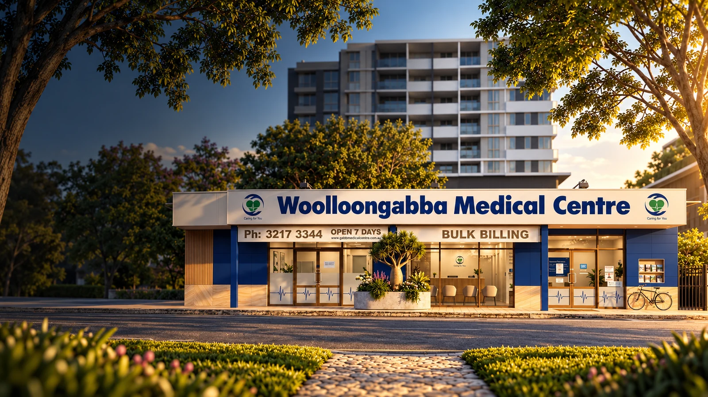

Why Join Woolloongabba Medical Centre
A professional home for patient-centred care.
Woolloongabba Medical Centre is a community-focused practice in Brisbane’s inner south. Our culture is built around continuity, respectful relationships and the belief that healthcare works best when clinical and operational teams support one another.
We want healthcare professionals who join us to understand how we work: collaboratively, respectfully and with a long-term commitment to our patients and community.
Supportive Clinical Team
A supportive culture where colleagues can ask questions, share context and work together around each patient’s care.
Patient-Centred Care
Familiarity with a patient’s history and circumstances gives each consultation more context and helps care evolve over time.
Professional Development
A culture that values learning, reflection and ongoing professional growth across clinical and operational roles.
Modern Healthcare Environment
A multidisciplinary environment connecting general practice, nursing support and allied health where relevant.
Continuity of care. Long-term relationships help care stay coherent as needs change.
Community healthcare. We care for people from Woolloongabba and neighbouring Brisbane inner-south communities.
Teamwork. General practitioners, nurses, allied health practitioners, reception and practice management each contribute to a dependable patient experience.
Patient relationships. Trust grows through consistent, respectful interactions across the whole practice team.
Meet the team
Healthcare is an organisation, not a directory.
Our practitioners, nurses, reception team and healthcare professionals work together to deliver high-quality, patient-centred care to the local community.
Patient care is supported by different professional and operational roles. Explore the multidisciplinary teams that work together across our practice — and see how recruitment connects to the practitioner authority already built across this website.
Talent community
Join Our Talent Community
Apply for an advertised role or register your interest for future opportunities.
Current opportunities
Current Opportunities
Roles may arise across general practice, nursing, allied health, reception or other practice functions. Active opportunities are listed below when available.
We are not currently advertising a specific role. Expressions of interest are welcome.
Community healthcare
Making a Difference in Community Healthcare
Joining Woolloongabba Medical Centre means contributing to long-term patient relationships, continuity of care and community-focused healthcare for local families and patients.
Continuity of Care
Support patients through every stage of life with ongoing, trusted healthcare relationships.
Community Connection
Be part of a practice that serves generations of families within the local community.
Team-Based Care
Work alongside GPs, nurses, allied health professionals and support staff.
Meaningful Healthcare
Contribute to healthcare outcomes that make a genuine difference for patients.
Life in Woolloongabba
Connected to Brisbane’s inner south.

We are located at 468 Vulture Street in Woolloongabba, close to established residential, healthcare and community areas across Brisbane’s inner south.
- Close to Brisbane CBD — inner-south location with practical city access.
- Major hospitals nearby — working within a dense healthcare corridor.
- Public transport access — journey options available through Translink.
- Established patient community — continuity across Woolloongabba and neighbouring suburbs.
How recruitment works
A clear healthcare recruitment journey.
Whether you are responding to a published opportunity or joining our talent community, the process is designed to be respectful, clear and clinically informed.
Patient & community impact
Make a Difference in Community Healthcare
Working at Woolloongabba Medical Centre means contributing to more than a roster. It means supporting long-term patient relationships, continuity of care and local health outcomes in an established Brisbane community.
Long-term patient relationships
Care that knows a patient’s story and can evolve with them over time.
Community healthcare
Everyday health needs and changing life stages across Woolloongabba and neighbouring suburbs.
Continuity of care
Familiar clinical and operational teams helping care stay coherent between visits.
Multidisciplinary teamwork
General practice, nursing, allied health and reception working as one organisation.
Local health outcomes
Practical contribution to accessible, trusted healthcare close to where people live.